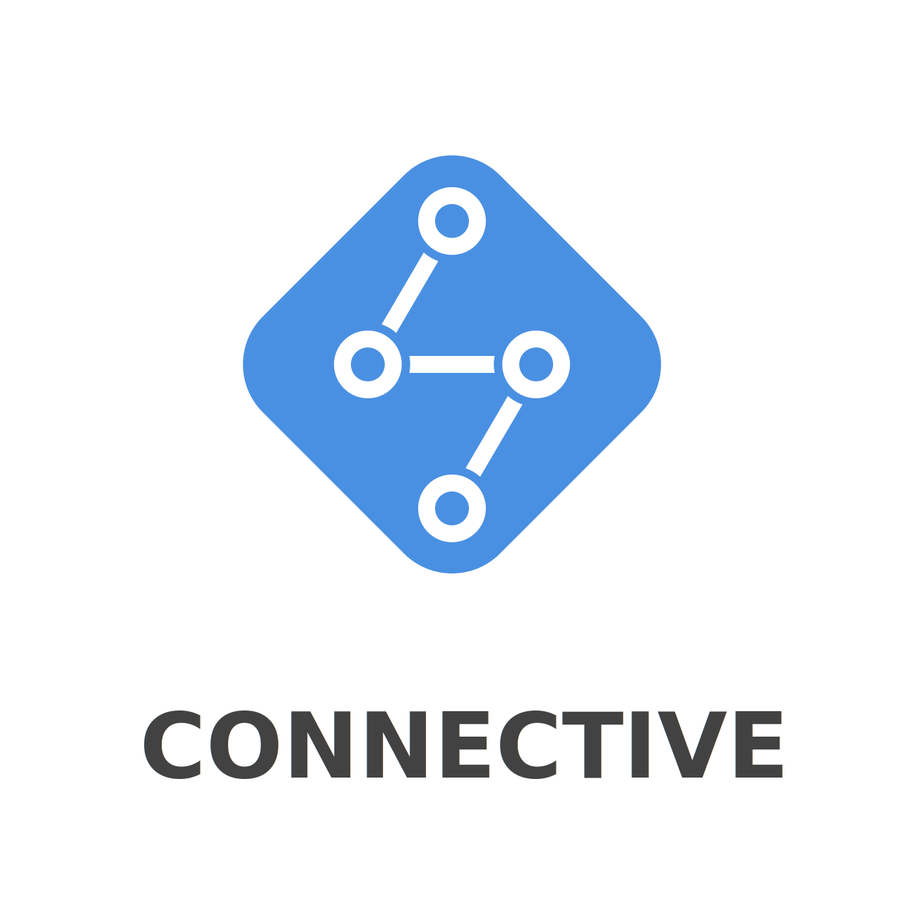

CONNECTIVE facilitates large-scale
reactive programming
in Javascript/Typescript.
It enables declarative creation of large and complex data/event flows and supports re-use of flows.
npm i @connectv/core
A
Hellow World! example:
import { wrap, map, filter } from '@connectv/core';
import { fromEvent } from 'rxjs';
let a = document.getElementById('a') as HTMLInputElement;
let p = document.getElementById('p');
//
// Will say hello to everyone but 'Donald'.
// For obvious reasons.
//
wrap(fromEvent(a, 'input')) // --> wrap the `Observable` in a `Pin`
.to(map(() => a.value)) // --> map the event to value of the input
.to(filter(name => name != 'Donald')) // --> filter 'Donald' out
.to(map(name => 'hellow ' + name)) // --> add 'hellow' to the name
.subscribe(msg => p.innerHTML = msg); // --> write it to the <p> element
A more elaborate example:
import { wrap, pipe, map, filter, sink } from '@connectv/core';
import { fromEvent, timer } from 'rxjs';
import { delay, debounceTime } from 'rxjs/operators';
let a = document.getElementById('a');
let p = document.getElementById('p');
//
// Will calculate fibonacci sequence up to given index, displaying every number in the
// sequence along the way.
//
// --> calculate next iteration step on fibonacci sequence
let m = map(([next, prev, l]) => [next + prev, next, l - 1]);
wrap(fromEvent(a, 'input')) // --> wrap the `Observable` in a `Pin`
.to(pipe(debounceTime(1000))) // --> wait for people to type in the number
.to(map(() => parseInt((a as any).value))) // --> map the input event to value of the input
.to(map(n => [1, 0, n])) // --> map the number to start iteration
.to(filter(([_, __, l]) => l >= 0)) // --> check if we should do any iteration
.to(m) // --> calculate next step
.to(pipe(delay(300))) // --> take a breath
.to(filter(([_, __, l]) => l > 0)) // --> check if we should continue
.to(m) // --> back to the loop
.to(map(([_, f, __]) => f)) // --> btw, lets take each number in the sequence
.to(sink(v => p.innerHTML = v)) // --> set the text of <p> to the fib number
.subscribe(); // --> bind the whole thing.
CONNECTIVE is a thin layer on top of
RxJS.
While
RxJS's API excels at short-lived and small reactive flows,
CONNECTIVE provides
an API that makes creating long-living and large and/or complex reactive flows easy and intuitive.
How To Install
Using
NPM:
npm i @connectv/core
Getting it via a CDN:
<script src="https://unpkg.com/@connectv/core/dist/bundles/connective.es5.min.js"></script>
How To Use
I would highly recommend
reading the docs
for properly utilizing
CONNECTIVE. A
basic knowledge of RxJS
would also help, though it is not mandatory.
However, if you need some cheatsheet to remind you of some stuff, or just want some starter tips
to dive in and play around a bit first, then here you go:
Cheatsheet
Most important concepts in
CONNECTIVE are
Pins and
Agents.
Pins can be thought of
as lazy
Observables, they represents the sources, the sinks or any intermediate node in your reactive flow
(like transformations). You can connect
Pins via their
to() and
from() methods:
import { source, sink, pin } from '@connectv/core';
let a = source();
let b = pin();
let c = sink(value => console.log(value));
a.to(b).to(c);
c.bind();
a.send('hellow!');
a.send('world!');
import { source, sink, pin } from '@connectv/core';
let a = source();
let b = pin();
let c = sink(value => console.log(value));
c.from(b).from(a);
c.bind();
a.send('hellow!');
a.send('world!');
You can pass multiple parameters to
to() and
from(), causing the
Pin
to be connected to multiple pins:
import { source, sink } from '@connectv/core';
let a = source();
let b = sink(value => console.log('B::' + value));
let c = sink(value => console.log('C::' + value));
a.to(b, c);
b.bind(); c.bind();
a.send('hellow!');
a.send('world!');
import { source, sink } from '@connectv/core';
let a = source();
let b = source();
let c = sink(value => console.log(value));
c.from(a, b); c.bind();
a.send('hellow!');
b.send('world!');
You can directly subscribe on any
Pin using its
subscribe() method, so you don't need to use
sink() all the time.
You can also use
group() to work with a multitude of
Pins at once:
import { source, pin, group } from '@connectv/core';
let a = source();
let b = source();
group(a, b).to(pin()).subscribe(console.log);
a.send('hellow!');
b.send('world!');
Note that:
- the bind() method is not present on all pin types.
- when you call subscribe() or bind() methods of a pin, the pin
becomes locked. You cannot connect any new pin to a locked pin.
- if a pin is connected to another locked pin, it will become locked as well.
- you can check if a pin is locked via its .locked property.
import { pin } from '@connectv/core';
let a = pin();
let b = pin();
a.to(b);
console.log('A:: ' + a.locked + ' B:: ' + b.locked);
b.subscribe();
console.log('A:: ' + a.locked + ' B:: ' + b.locked);